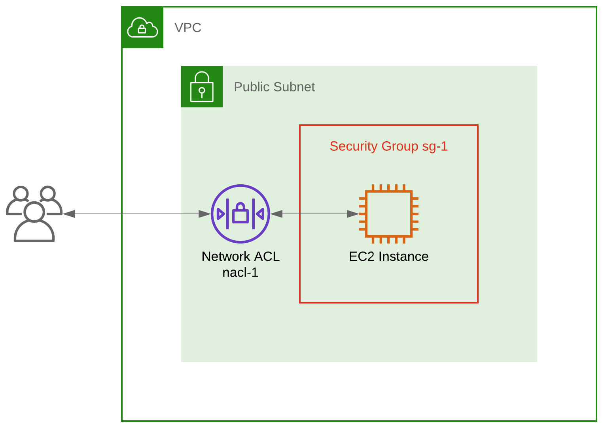
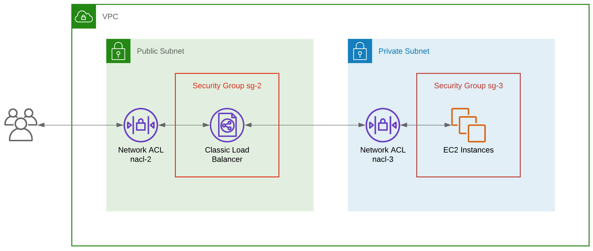

Handling ephemeral ports in Security Groups and Network ACLs
Introduction
Confused about ephemeral ports? Getting a response from an HTTP request to your first-ever EC2 instance is a Hello-World moment many AWS users have. But when your EC2 is associated with a Security Group and Network ACL that only allow port 80 traffic, the responses to your requests won't make it out.
If you've ever wondered "why is my EC2 not responding?" and fixed it by simply allowing All Traffic, keep reading. At this point it's worth taking a look at the primary security components inside any VPC — Security Groups and Network Access Control Lists.
Security Groups
Security Groups act as virtual firewalls around resources inside your VPC. You use them to allow (but not deny) inbound and outbound traffic, based on port number and a CIDR, IP address, or Security Group.
They are stateful: allowed inbound traffic is permitted back out without an outbound rule, and allowed outbound traffic is permitted back in without an inbound rule.
Network Access Control Lists (NACLs)
NACLs provide a similar layer of security but act at the subnet level. They support both allow and deny rules, and are stateless.
That means allowed inbound traffic may only return outbound if an outbound rule exists, and allowed outbound traffic may only return inbound if an inbound rule exists.
NACL rules are evaluated in order of rule number from lowest to highest. The first rule to match is applied (e.g. to allow) regardless of any later contradicting rules.
EC2 instances and ephemeral ports
So why can't my EC2 respond to HTTP requests? Many possible answers, but in the context of this post: ephemeral ports.
Wikipedia describes ephemeral ports as being "allocated automatically from a predefined range…" and used as "…the port assignment for the client end of a client–server communication to a particular port (usually a well-known port) on a server."
In other words: when a client initiates a request to a server on a well-known port (e.g. port 80 for HTTP), the client port is chosen from the ephemeral range. On AWS, the ephemeral port range for EC2 instances and Elastic Load Balancers is 1024–65535.
Consider the architecture in diagram A — an EC2 instance associated with a Security Group (sg-1) and located in a public subnet that's associated with a single Network ACL (nacl-1).

If you initiate an HTTP request to this EC2 on port 80, your request will originate from an ephemeral port on your side between 1024 and 65535.
To let your request through, sg-1 must have an inbound rule allowing requests on port 80. The return path for the response back to you on your ephemeral port is automatically allowed by the Security Group.
Security Group sg-1 — Inbound
| Type | Protocol | Port Range | Source | Description |
|---|---|---|---|---|
| HTTP | TCP | 80 | 0.0.0.0/0 | Allow inbound traffic on port 80 from any IP address |
Security Group sg-1 — Outbound
| Type | Protocol | Port Range | Destination | Description |
|---|---|---|---|---|
| No explicit outbound rules required | ||||
The NACL nacl-1 must also have an inbound rule allowing requests on port 80. However, due to the stateless nature of NACLs, it must also have an explicit rule for the response back to you on your ephemeral port between 1024 and 65535.
Network ACL nacl-1 — Inbound
| Rule | Type | Protocol | Port Range | Source | Action | Description |
|---|---|---|---|---|---|---|
| 100 | HTTP (80) | TCP (6) | 80 | 0.0.0.0/0 | ALLOW | Allow inbound traffic on port 80 from any IP address |
| * | ALL Traffic | ALL | ALL | 0.0.0.0/0 | DENY |
Network ACL nacl-1 — Outbound
| Rule | Type | Protocol | Port Range | Destination | Action | Description |
|---|---|---|---|---|---|---|
| 100 | Custom TCP | TCP (6) | 1024–65535 | 0.0.0.0/0 | ALLOW | Return path for the response from EC2 (port 80) to the outside world (ephemeral port) |
| * | ALL Traffic | ALL | ALL | 0.0.0.0/0 | DENY |
Load balancers and ephemeral ports
The scenario above illustrates a point, but a more realistic example would be to have an Elastic Load Balancer distributing requests between a number of EC2 instances in an Auto Scaling Group spanning multiple AZs.
Unless you've already gone serverless, this is the epitome of scalable, fault-tolerant design — you can scale out when needed by adding EC2 instances and sidestep unhealthy ones automatically.
Consider diagram B — a Classic Load Balancer (to keep things simple) listening for HTTP on port 80 and distributing requests to a group of EC2 instances; assume health checks are on port 80 too.

If you initiate an HTTP request to the load balancer on port 80, your request originates from an ephemeral port on your side between 1024 and 65535. The load balancer, now acting as an effective client using its own ephemeral port between 1024 and 65535, will relay your request to port 80 on one of the EC2 instances. The EC2 responds to the load balancer on its ephemeral port, and the load balancer relays that response to you on your ephemeral port.
So how do we configure the Security Groups? To let your request through to the load balancer and then through to one of the EC2 instances, sg-2 must have inbound and outbound rules allowing requests on port 80.
Likewise sg-3 must have an inbound rule allowing requests on port 80 from the load balancer. The best-practice way to do this is by referencing the load balancer's Security Group itself in sg-3. The return path for the response is automatically allowed by the Security Groups.
Security Group sg-2 — Inbound
| Type | Protocol | Port Range | Source | Description |
|---|---|---|---|---|
| HTTP | TCP | 80 | 0.0.0.0/0 | Allow inbound on port 80 from any IP; return path automatic |
Security Group sg-2 — Outbound
| Type | Protocol | Port Range | Destination | Description |
|---|---|---|---|---|
| HTTP | TCP | 80 | [Private subnet CIDR] | Allow outbound to the EC2 instances on their port 80; return path automatic |
Security Group sg-3 — Inbound
| Type | Protocol | Port Range | Source | Description |
|---|---|---|---|---|
| HTTP | TCP | 80 | sg-2 | Allow inbound on port 80 from the load balancer; return path automatic |
Security Group sg-3 — Outbound
| Type | Protocol | Port Range | Destination | Description |
|---|---|---|---|---|
| No explicit outbound rules required | ||||
How about the NACLs? In short, the config is similar to the Security Groups for sg-2 and sg-3 but with additional rules for the return paths:
Network ACL nacl-2 — Inbound
| Rule | Type | Protocol | Port Range | Source | Action | Comments |
|---|---|---|---|---|---|---|
| 100 | HTTP (80) | TCP (6) | 80 | 0.0.0.0/0 | ALLOW | Allow inbound on port 80 from any client IP |
| 200 | Custom TCP | TCP (6) | 1024–65535 | [Private subnet CIDR] | ALLOW | Return path for response from EC2 (port 80) to load balancer (ephemeral port) |
| * | ALL Traffic | ALL | ALL | 0.0.0.0/0 | DENY |
Network ACL nacl-2 — Outbound
| Rule | Type | Protocol | Port Range | Destination | Action | Comments |
|---|---|---|---|---|---|---|
| 100 | HTTP (80) | TCP (6) | 80 | [Private subnet CIDR] | ALLOW | Allow outbound to the EC2 instances on their port 80 |
| 200 | Custom TCP | TCP (6) | 1024–65535 | 0.0.0.0/0 | ALLOW | Return path for response from load balancer (port 80) to outside world (ephemeral port) |
| * | ALL Traffic | ALL | ALL | 0.0.0.0/0 | DENY |
Network ACL nacl-3 — Inbound
| Rule | Type | Protocol | Port Range | Source | Action | Comments |
|---|---|---|---|---|---|---|
| 100 | HTTP (80) | TCP (6) | 80 | [Public subnet CIDR] | ALLOW | Allow inbound on port 80 from the load balancer |
| * | ALL Traffic | ALL | ALL | 0.0.0.0/0 | DENY |
Network ACL nacl-3 — Outbound
| Rule | Type | Protocol | Port Range | Destination | Action | Comments |
|---|---|---|---|---|---|---|
| 100 | Custom TCP | TCP (6) | 1024–65535 | [Public subnet CIDR] | ALLOW | Return path for response from EC2 (port 80) to load balancer (ephemeral port) |
| * | ALL Traffic | ALL | ALL | 0.0.0.0/0 | DENY |
Conclusion
Even though these are just examples, it's always advised to use the least-privilege principle when configuring Security Groups and NACLs — only allow the traffic you need and deny everything else.
For more, see the AWS documentation on Security Groups and NACLs.
Four things to keep in mind:
- Avoid allowing ALL Traffic. Define your traffic paths and build least-privilege rules accordingly.
- Consider ports. Only HTTP was mentioned here, but you may need HTTPS (443), SSH (22), and RDP (3389) in addition to ephemeral ports.
- Consider sources and destinations. Do you really need
0.0.0.0/0, or can you restrict to one or more trusted subnet CIDRs? - Use NACLs in conjunction with Security Groups so your network has two lines of defence.